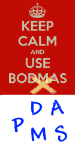
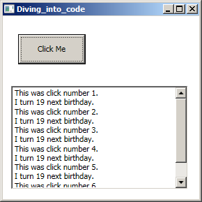
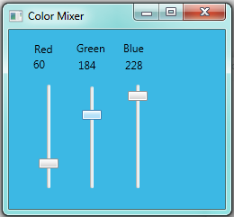

5. Diving into Code¶
Some of this chapter was adapted or taken from Yusuf’s tutorial at http://www.ict.ru.ac.za/resources/way_of_the_program/.
There are a few threshold concepts in this chapter. Briefly, a threshold concept is one that is often troublesome for some beginners. It changes the way we think about something. (The education theorists use the word transformational.) And wrapping our heads around a threshold concept usually requires us to let go of the “old way” of thinking about or doing things before we can see things in the new or different way. (The fact that the new way of seeing things might conflict with other knowledge you already have is what sometimes makes threshold ideas so troublesome!) If you’d like to know more about threshold concepts a Google search will turn up some amazing stuff.
When writing code, there are three essential ideas that are absolutely fundamental:
- What a variable is, and how it is created, given a value, perhaps changed, used, and later destroyed. (This is different from maths, so don’t get confused!)
- Computer code and statements are executed one-at-a-time, and one statement can change what a previous statement has done. (This is different from maths too, so it can easily be another stumbling point if we’re not careful.)
- At any instance in time, every “live” variable has some or other value. All our live variables and their current values are referred to as the state of our program. A key idea in programming is that each step of the code can update or change the program state. (Most of the Maths you have seen before doesn’t have the idea of a state that changes over time. But this is a central idea in programming. So once again, it can be a troublesome threshold idea that we have to become very comfortable with if we’re going to learn to think like programmers.)
5.1. Basic C# programming theory¶
5.1.1. Types¶
Before you can write your first code, there is some theory that you must know. The first thing to know is that according to C#, everything has a type. For example, in C#, 2 is an int. (In maths you’d call it an integer, but we’re more lazy that that, and always use use this short name for the type.) We can say that the type of 2 is int.
We are going to use five of the C# primitive types. (“Primitive” here means already built-in to C#, and understood in any C# program.). They are:
- int
- This is any whole number between approximately -2000000000 and 2000000000.
- bool
- This is either true or false.
- double
- This is any number with a decimal point in it.
- char
- This is any single character, digit, or punctuation mark. In C#, a char is always enclosed in single-quotation (
') marks. - string
- This is zero or more characters, digits, and/or punctuation marks. In C#, a string is always enclosed in (double-)quotation (
") marks.
Important
We will be referring to these five types very often, and using one or more of them in every single program for which we write code! Therefore, become very familiar with them. When you hear the word string or bool, for example, you should immediately understand the Computer Science meaning of that term; and whenever you see any data, you should immediately understand what its type is.
| Type | Examples |
|---|---|
| int |
|
| bool |
|
| double |
|
| char |
|
| string |
|
Exercises
What is the type of:
89.9______________________________________false______________________________________'p'______________________________________-0.0______________________________________11______________________________________'0'______________________________________0______________________________________"0"______________________________________true______________________________________"z"______________________________________"775.21"______________________________________
When we program, we have to take real-world ideas like kilometers or money or names and student numbers, and figure out how best to work with these things in C#. Which C# primitive type would be best suited to work with:
- Your name? ______________________________________
- Your age in years? ______________________________________
- Whether you are alive? ______________________________________
- Your grade (A, B, C, D, or E) for an assignment? ______________________________________
- The length of a line in centimetres? ______________________________________
- The number of pages in a book? ______________________________________
- The exact price of a loaf of bread? ______________________________________
- Whether you have eaten anything in the last 6 hours? ______________________________________
- The second letter of your first name? ______________________________________
- The number of grains of sand in a jar? ______________________________________
- The square root of 2? ______________________________________
- Your reasons for reading this book? ______________________________________
- The colour of your eyes? ______________________________________
5.1.2. Working with time¶
The second (and last) bit of theory to know before we begin writing programs is that programming instructions that we’re going to deal with in these notes are executed sequentially, one after the other. We’ve already seen that our code-behind is organized into handler methods that are called when some event happens. This means that the order in which you write programming statements within your handler matters. Each statement might change the state of the program (by, say, creating a new variable, or changing an existing variable.) If you get the order incorrect, the program will do the incorrect thing.
The order in which statements are executed is called the control flow of the program. Control flow can sometimes depend on data: if your age is less than 18 then we want this bit of code to execute, otherwise we want some different code to execute. So the control flow could consist of multiple paths, each of which could be taken during program execution. For this kind of programming, one of the most important skills of a programmer is the ability to “see” the control flow of a program. The best way to get better at “seeing” control flow is to read other people’s programs, try to work out what they do without executing them, and then execute them to see if your reasoning was correct (or, if your reasoning was incorrect, where and why it was incorrect).
The way we’re programming in this book, it is the event — a click of a button (and later, other events like moving the mouse) — that causes the application to spring into action and to begin executing the code in the handler method.
5.2. A first program¶
With that, you are ready to begin your first program!
1 2 3 | int a;
int best;
int c;
|
This simply says that we should define (create) a variable called a, and that a should be capable of holding an int value. (It will get an initial value of 0, just like your calculator memory is set to zero when you first put your batteries into and turn on the calculator.) Then we create a second variable called best, and a third one called c. Notice that each statement ends with a ; (semicolon) character. A shorthand, equivalent way of saying exactly the same thing is
1 | int a, best, c;
|
a, best, and c are variables. A variable has a name (which is an identifier) and a type. It holds a value. The value of a variable can be changed, but its name and type cannot. Identifiers should start with a letter and contain no spaces or punctuation.
Important
A variable in Computer Science is not the same as a variable in Statistics, or a variable in Mathematics. Understand the specific Computer Science meaning, and do not confuse it with your other subjects!
Merely creating a variable doesn’t make for an exciting program. Let’s try this program instead:
1 2 3 4 | int a, b, c;
a = 5;
b = 10;
c = a + b;
|
Let’s understand what it does. First, we define (create) the a, b, and c variables. Then we assign the value 5 to a. Then we give the value 10 to b. Lastly, we put the value 15 into c.
These statements, of the form X = Y;, are called assignment statements. Assignment statements are used to store a new value into a variable. All assignment statements have a right-hand-side (on the right of the =) and a left-hand-side (on the left of the =). There is always a variable name on the left-hand-side. An assignment statement executes the right-hand-side first, and then puts the answer it got into the variable that is named on the left-hand-side.
While the computer is working out the value on the right-hand-side, whenever it encounters a variable name it will substitute the value that is currently stored in that variable. So say we’re executing line 4 above. The computer fetches the value in the a variable, and substitutes a 5. In the b variable it finds a 10. So it adds the 5 and the 10, and gets the value 15. This is why the variable c is given the value 15, rather than the value “a + b”.
Remember that control flow matters ...
Programs do their work one statement at a time. So we would be wrong if we looked at the program above and tried to think about all four statements at the same time. Each statement in a program changes something from how it was before. (We said that the program has a state, and statements change the state of the program.) So the first key skill we’ll need is to realize that statements are executed in a specific order, top-to-bottom, and that each one makes a change to the state. It is a bit like baking a cake from a recipe — you need to do things one step at a time, in the correct order. If you bake your cake before you’ve mixed the ingredients, you’re asking for trouble!
A key programming skill is planning what steps are needed to solve our problem, and getting the steps into the correct order.
We can tighten this code up a bit, by combining definitions (where we define, or create, the variable) and assignment statements, and reduce it from 4 lines to 3 lines in length.
1 2 3 | int a = 5;
int b = 10;
int c = a + b;
|
And if we’d like to, we can use the shorthand form of definitions to reduce it to a single line:
1 | int a = 5, b = 10, c = a + b;
|
Now lets make it a bit more interesting...
1 2 3 4 5 | int a, b, c;
a = 5;
b = 10;
c = a + b;
b = a + c;
|
Now our variables are given initial values in lines 2-4, but when line 5 is executed can you say what value is assigned to b? And when this code completes its execution, what value is in the variable c?
If you said the value in b was 20, and the value in c was still the 15 that was left there in line 4, you’d be right.
Putting things together
If you’re not yet convinced that Computer Science isn’t Mathematics, think about this: in Mathematics, there are common equivalents for int, double, and bool types. There are no common equivalents for char and string types. That might be because Computer Science is a more practical and pragmatic discipline, and one of the common things that people want to be able to do is read and write text. So it makes sense for Computer Science to have char and string, and it makes sense for Mathematics to not use those types. It also makes sense for programming languages, such as C#, to use those types in a non-mathematical way. For example, if you wrote this:
1 2 3 | string a = "super";
string b = "man";
string hero = a + b;
|
That would be perfectly OK in C# (and hero would end up with the value superman). In Computer Science, + commonly means put these things together. If you put two ints together, you get the sum of the ints. If you put two strings together, you get the combined value of both strings. This makes absolutely no sense, mathematically. But this is Computer Science – not Mathematics!
Exercises
There is something wrong with each of these lines of code. For each line, write a sentence describing what is wrong.
- in a;
- string a b;
- bool a
- int a, string b;
- int 3d;
- int a = 3.0;
- double a, b = 5.0, c = “6.0”;
- char zoology = “”;
- char biology = “E”;
- bool botany = True;
- INT CHEMISTRY = 100;
- bool able, able;
- int articulate = 8; bool ampersand = articulate;
- string o’brien = “Connor”;
What type would we need to fill in to define x in each line below?
- ___________ x = “Yes”;
- ___________ x = 213;
- ___________ x = 0.0;
- ___________ x = ‘y’;
- ___________ x = “y”;
- ___________ x = true;
- ___________ x = 5 + 3;
- ___________ x = “false”;
- ___________ x = 3.2/5.1;
- ___________ x = false;
- ___________ x = “20/5”;
5.3. Basic Arithmetic¶
There are five arithmetic operators that are commonly used in C#. The first four should be familiar to you from school:
- X + Y adds X and Y
- X - Y subtracts Y from X
- X * Y multiplies X and Y
- X / Y divides X by Y
The last operator is the modulus operator:
- X % Y gives the remainder that would result from dividing X by Y
The first time you did division at school, you probably expressed your answer as “A remainder B”. For example, you would say that 7 divided by 4 was “1 remainder 3”, or that 24 divided by 6 was “4 remainder 0”. The modulus operation gives you the “remainder” part of the answer; so 7 % 4 gives 3, and 24 % 6 gives 0. The sign of the answer is the same as the sign of the dividend. (Dividend is the one on the left: dividend/divisor.) So, for example, -7 % 4 gives -3.
5.4. Order of Operations¶
You can (and should) group arithmetic terms using parentheses (round brackets), just as you would in ordinary mathematics.
The usual precedence of operations (parentheses, division & multiplication, addition & subtraction) applies to arithmetic expressions in C#. When operators have the same precedence (division and multiplication do, and addition and subtraction do), arithmetic expressions are evaluated from left to right.
5.5. Can we mix different types in an expression?¶
Arithmetic that is done exclusively with ints always results in integer answers. This means that 7 / 4 = 1, and not 1.75 or 2. Arithmetic that is done exclusively with doubles results in double answers. This means that 7.0 / 4.0 = 1.75.
Arithmetic that mixes doubles and ints results in double answers. This means that 7.0 / 4 = 1.75, and 7 / 4.0 = 1.75.
Exercises
What is the answer to these arithmetic expressions? When the answer is a double, be sure to show a decimal point in your answer.
- 6 * 4 - 1 ________
- 6 * (4 - 1) ________
- 3.2 * 2.0 ________
- 3.2 * 2 ________
- (3 * (5 - 2) / 4) + 1 ________
- ((5 - 2) / 4 * 3) + 1 ________
- 1 + 1.0 ________
- (-(-2) + (-2 * -2 - 4 * 3 * 2)) / 2 * 3 ________
- (-(-2) + (-2 * -2 - 4.0 * 3 * 2)) / 2 * 3 ________
- 8 - -8 ________
- (10 * 7) % 3 ________
- (5 % 2) + (71553 % 2) ________
- (19 % 4) + (-72 % 10) ________
5.6. Tokens and Keywords¶
A token in a programming language is a group of one or more characters that are
treated as a single chunk. So a number like 1234 would be a token. An identifier
like x or average is a single token. The semicolon (;), the parentheses,
all the arithmetic operators, the assignment symbol (=) are also tokens.
Some tokens consist of more than one character: we use the == token to test
for equality. We pronounce it equals. Other multi-character tokens that we’ll see in the
next section are //, /* and */. You may not leave a space between these
characters: the sequence */ is one token, but * / is two tokens.
Some identifiers (multi_character tokens that start with a letter) are keywords in the
language: they have a special meaning that the compiler understands.
Type names like int, bool, and string are keywords, true and false are keywords,
and we’ll soon meet other keywords like if, else, while,
new, and for. You can find a list of all the keywords
at http://msdn.microsoft.com/en-us/library/x53a06bb.aspx.
You can’t use keywords for your own identifiers. So don’t choose a name like double for
your variable (or for a control in your GUI).
In Visual Studio, and in the on-line version of this textbook, keywords are often shown in different colours. This colour-coding helps us “chunk” the program mentally.
5.7. Comments¶
A comment is some part of your program code that exists only for humans. C# understands that when it encounters a comment, it should not try to make sense of the comment, nor should it try to execute it.
There are two mechanisms for introducing comments. A single-line comment starts with
a double-forward-slash token //. C# will ignore everything else to the right of it on the same line.
Look at the code below at lines 10 and 11 where we use single-line comments.
Block-comments are comments that can extend over many lines. A comment starts whenever the
compiler finds the start-of-comment token (/*) and everything is treated as a comment until the
compiler finds a matching end-of-comment token (*/). We have a block-comment in the program
below that starts on line 1 and ends at line 6.
5.8. Type conversions¶
Let’s revisit the code from the previous chapter for calculating the area of a pane of glass. (We’ve added a new block-comment, so it not completely identical.)
1 2 3 4 5 6 7 8 9 10 11 12 13 14 15 | /* This is an example of a block-comment that can span
many lines. The C# compiler will ignore comments like this.
This fragment of code was written by Pete.
Date of last change: 13 Jan 2014.
*/
private void btnCalculate_Click(object sender, RoutedEventArgs e)
{
double w = Convert.ToDouble(txtWidth.Text); // Convert string in texbox to double.
double h = Convert.ToDouble(txtHeight.Text); // Same again.
double area = w * h;
string result = string.Format(" {0} x {1} gives an area of {2}\n", w, h, area);
MessageBox.Show(result, "It says ...");
}
|
Because C# has this idea of every value has a type, a string like “123” is not the same as the integer 123, or the double number 123.0
Humans would have no problem in automatically converting a string into a number, or vice-versa. But our programs have to do it the hard way, explicitly.
Normally input and output from a program will use strings, because that is what we humans read and write. So C# needs a mechanism to convert from the text (or strings) that you type into numbers, and vice-versa.
So lines 10 and 11 illustrate the way we will take some text that the user has entered on our GUI, and convert it to a different type: a double in this case.
C# provides a built-in library of Convert methods. In this book
we’ll only use two of them: the one we’ve just seen, and a conversion that can
convert a string to an int.
1 | int n = Convert.ToInt32(txtAge.Text); // Convert string to an int.
|
5.9. String formatting¶
New let’s tackle the opposite problem. Our program has calculated some answers, but we need to convert them into strings so that our human users can read them.
In line 13 of the program above we used the string.Format method to create a new string.
Let’s dig a bit deeper into how that works, as we’ll be using it a lot. String formatting
allows us to provide a text template that contains some place-holders.
The three place-holders in the template in line
13 above are {0}, {1} and {2}.
When the string.Format method is executed, it creates a new string from its template,
and it replaces all the place-holders with values.
The place-holders are numbered, and their number
determines which argument will get plugged in at that position.
This results in a new string, built from the template and the values that were substituted. We can assign this to a string variable, or use it in some other way.
So in the example above, when line 13 is executed, the current value in variable w
gets plugged into
the template in place of the place-holder {0}, the current value in h gets plugged into
the template in place of {1}, and the area that we previously calculated on line 12 and then
saved into a variable gets plugged into the template in place of {2}.
String formatting is very powerful and can do much more than we shown here.
5.10. Debugging¶
Programming is a complex process, and because programs are written by human beings, they often contain errors. Some of these errors are simple, like messing up the grammar of the programming language, and the compiler can tell you there’s a problem and (usually) also tell you where it is, so you can fix it. These kinds of simple errors are called syntax errors. Syntax refers to the structure of a program and the rules about that structure. Mis-spelling a word in a programming language, or putting it in the wrong order, or not including necessary punctuation, or including too much punctuation, or not capitalising a word that should be capitalised (or vice versa!) are all examples of syntax errors.
During the first few weeks of your programming career, you will probably spend a lot of time tracking down syntax errors. As you gain experience, you will make fewer syntax errors and find them faster. After a few weeks, you won’t make any syntax errors at all! This is just like the process of learning a new spoken language. While you are learning, you will make silly errors that a native speaker wouldn’t make. But after a while, you don’t make any errors. And, just like learning a new spoken language, the more you practise, the better you’ll get ... and if you don’t practice enough, you’ll keep making mistakes. So practice: it really does make a big difference.
The more difficult errors are semantic errors, where you’ve given the computer a valid sequence of instructions that the compiler can understand, but the instructions don’t lead to the result that you think they lead to. You’ll run into plenty of these, and when you do you’ll need to understand exactly what you’re asking the computer to do, so that you can figure out where the flaw in your reasoning is.
Runtime errors, which cause a program to stop running, occur because of semantic errors. Usually, you’ve made the error of assuming something that you shouldn’t have assumed! These errors are also called exceptions because they indicate that something exceptional (and bad) has happened. For example, not even the computer can divide a number by zero. So if you’ve written some code that tries to divide by zero, you’ll get a runtime error.
Programming errors are called bugs and the process of tracking them down and correcting them is called debugging. It is useful to distinguish between types of bugs in order to find the cause of the error and fix it more quickly. Here is how you can distinguish between types of bugs:
- Do you get errors when you compile the program? If so, you have a syntax error.
- Does the program fail to do what you expect it to do? If so, you have a semantic error.
- Does the program stop running before you expect it to? If so, you have a runtime error which is caused by a semantic error. You need to fix the semantic error so that the runtime error will go away.
5.11. Variables in your code-behind methods¶
An important idea about variables is that at some point in time they are created, and later they die. They have a lifetime.
When we define a variable inside a code-behind method, it only lives while our program is busy executing the method. When the method completes its work, any variables that were created by it are destroyed, and their values are lost.
This means that we can’t use a variable defined inside a method to “remember” values over longer periods of time.
We can also define variables at the class-level (you’ll learn a lot more about classes soon). These are called class-level variables. In our programs, these variables are created when our window first opens as we run our program. They will stay alive as long as our window is alive, i.e. while our program is running.
So let’s do a very simple example. We’ll have a GUI with a single button. Each time the button is clicked, we’ll show a message that tells us how many times the button has been clicked since the program started running.
To keep a counter, we’ll need a variable, but one that stays alive between clicks of the button. So it will need to be defined in the class, rather than inside the method of the handler code. We’ll assume we can create the GUI, and attach a handler:
1 2 3 4 5 6 7 8 9 10 11 12 13 14 15 16 17 18 19 20 21 22 23 24 25 26 27 28 29 30 31 32 33 | public partial class Diving_into_code : Window
{
// Because this variable definition is outside any method,
// it is a class-level variable and it lives on, even after a
// method finishes executing.
int clickCounter = 0;
public Diving_into_code()
{
InitializeComponent();
}
private void button1_Click(object sender, RoutedEventArgs e)
{
// A variable defined here only has a short lifetime
// while this method is active.
int ageNow = 18;
// Add one to the class-level counter variable
clickCounter = clickCounter + 1;
// prepare the message we want shown.
string msg = string.Format("This was click number {0}.\n", clickCounter);
// Show the results in our GUI
txtResults.AppendText(msg);
// Now even if we change the local variable, it is about to die!
ageNow = ageNow + 1;
string msg2 = string.Format("I turn {0} next birthday.\n", ageNow);
txtResults.AppendText(msg2);
}
}
|
Notice the variable is defined at line 6, not inside the handler method.
Each time the handler method is executed, line 20 retrieves the current
value in the variable, adds one to it, and assigns that value back to become
the new value of the variable. Then in lines 23-26 we organize to put the answer
back into the GUI front-end. But notice how that works differently from
the variable ageNow which is defined inside the method. Study the results
carefully. Why doesn’t ageNow also count up 20, 21, 22, 23, 24 ... ?
5.12. Glossary¶
- assignment statement
- An assignment statement first evaluates the expression on its right-hand-side, and then stores the value into the variable on its left hand side.
- comment
- A part of the program that the complier ignores. It exists to be read by other humans.
- control flow
- Statements in a program are executed in a specific order, and each statement can change the state of the program (via an assignment statement). Control flow refers to the order in which execution happens in your code.
- expression
- A combination of operators and operands. This can also include a call to
a method, so for example
2.0 * 3.14159 * Math.Sqrt(x)is an expression that can be evaluated. - keyword
- An identifier that is reserved in the language, and has special meaning.
- identifier
- Used to name something, like the name we choose for a variable or a control.
There are some rules that identifiers
must start with a character and may not contain symbols or spaces. (There is one
exception: the underscore character
_is legal anywhere within an identifier, even as the first character.) - operator
- The main arithmetic operators that combine operands while they evaluate
the expression. For example, in the expression
5 + y, the operator is+. - operand
- The things that an operator works on. In in the expression
x + 3, thexand the3are the operands. - sequentially
- One after the other.
- state of the program
- Refers to what variables exist in a program at any point in time, and what values they hold.
- token
- A “chunk” of one or more characters that the compiler treats as a single “word”. When we read text we have to group characters into syllables and words. In the same way, when we read code we have to group the characters into tokens that carry meaning.
- type
- Every expression and value has a specific type. Types we’ll use most are
int,double,string,boolandchar. - type conversion
- An expression that converts from one type of value into another, typically from
a string like
"42"to anintvalue 42. - variable
- A variable is a place in the computer’s memory where it can hold a value. The value can be read by your code, and can be overwritten using an assignment statement.
- variable definition
- A statement that defines a variable causes it be created in the computer’s memory. A variable definition always gives the type and the name of the variable.
5.13. Exercises¶
Write a program that inputs a number of hours, a number of minutes, and a number of seconds (all integers). Output the total number of seconds represented by the time. For example, 2 hours 42 minutes and 17 seconds would convert to 9737 seconds in total.
Write a program that does the opposite of the above: input an integer number of seconds, and display the number of hours, minutes and seconds. For example, 3665 seconds would display as 1 hour, 1 minute and 5 seconds.
Write a program that inputs the lengths of the two shorter sides of a right-angled triangle. It should output the length of the hypotenuse. (Refresh your knowledge of Pythagoras’ theorem if you’re not comfortable with it.)
Design an application with 3 buttons showing A, B, and C. Or perhaps instead, (“crouch”, “touch”, “set”), or (“Three”, “Blind”, “Mice”). The buttons should be clicked in strict cyclic sequence A,B,C,A,B,C,A,B...
- Arrange program logic that pops up an error message if the user gets the sequence wrong.
- Use the
IsEnabledproperty on the buttons so that it becomes impossible for the user to make a mistake.
Design a colour-mixing application containing three sliders with a label above each. Each should allow the user to slide between 0 and 255. When any slider is changed, update its label to show its value.
Add this method to your code-behind (copy and paste is useful, and we haven’t covered these ideas yet. The code should make more sense as we progress in the book. At this stage we’re focusing on how the GUI interacts via events with the code-behind.)
1 2 3 4 5 6 7 8 9 10 11 12 13 14 15 16 17
private void setBackgroundColorFromSliders() { // Some say that WPF has a bug, others call it a feature ... // Do not handle events if the window is still initializing itself. if (!this.IsInitialized) return; byte r = Convert.ToByte(slider1.Value); byte g = Convert.ToByte(slider2.Value); byte b = Convert.ToByte(slider3.Value); label1.Content = r; label2.Content = g; label3.Content = b; this.Background = // Create a brush from the slider values new SolidColorBrush(Color.FromRgb(r, g, b)); }
A
bytetype is like a small integer with values between 0 and 255. We use this because theColor.FromRgbmethod wants byte arguments.Now add handlers so that each time any of the sliders is changed it responds by calling our new
setBackgroundColormethod. Run the program and play. To call the method above, use a line like this in your handler:1
setBackgroundColorFromSliders();
Video demonstration of building this colour-mixing application
http://www.ict.ru.ac.za/resources/thinksharply/videos/colormixer.avi